Deep Learning: An overview
Ahmed Touati
Data Scientist @ AXA Data Innovation Lab
Success stories
- Record performance
- MNIST (1988, 2003, 2012)
- ImageNet (since 2012) and Object Recognition
- ...
- Real applications
- Check reading (AT&T Bell Labs, 1995 – 2005)
- Optical character recognition (Microsoft OCR, 2000)
- Cancer detection from medical images (NEC, 2010)
- Object recognition (Google and Baidu’s photo taggers, 2013)
- Speech recognition (Microsoft, Google, IBM switched in 2012)
- Natural Language Processing (NEC 2010)
- ...
Plan
- Why deep learning? history and motivation
- Learning algorithm and regularization
- Computer vision: convolutional neural network
- Natural language processing: recurrent neural network
Historical waves of artificial neural networks
- Cyberneticsin the 1940s-1960s with the developement of theories of biological learning and implementation of perceptron
- Connectionism approach with back-propagation to train neural network with one or two hidden layer
- Deep learning since 2006.
Cybernetics (1948)
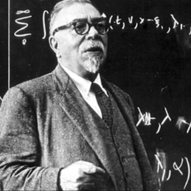 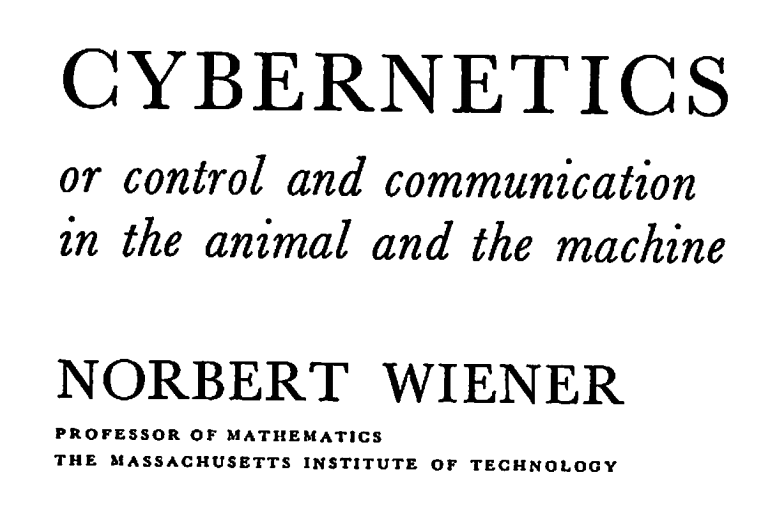- Cybernetics connects control (actions taken in hope of achieving goals) with communication (connection and information flow between the actor and the environment).
- Systems achieve goals through iterative processes or “feedback” loops
McCulloch & Pitts (1943)
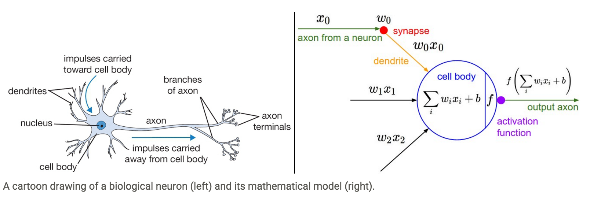- A simplified neuron model: the Linear Threshold Unit.
Perceptron: first trained machine
- First learning machine build at Cornell in 1960
- The perceptron was a linear classifier on top of a simple features extractor
- $y = \text{sign}(\sum_{i=1}^Nw_iF_i(x)+b)$

Limitation of linear classifier
- Cover theorem 1966: Let $\{x_1, x_2...x_P\}$ be vector in $\mathbb{R}^N$, the number of distinct dichotomies that can be realized by a plane is: $C(N, P) = 2\sum_{k=0}^{N-1}(_{k}^{P-1})$
- Abandon perceptrons and other analog computers.
- Develop symbolic computers and symbolic AI techniques.
Symbolic AI
- Developpement of knowledge-based system caoable of giving advice in paticular domain utilizing knowledge provided by human experts.
- Tow main components:
- Knowledge represented in a number of ways such as rules, frames and cases.
- Inference engine which uses knowledge to arrive at conclusion.
Quillian’s hierarchical propositional model (1968)
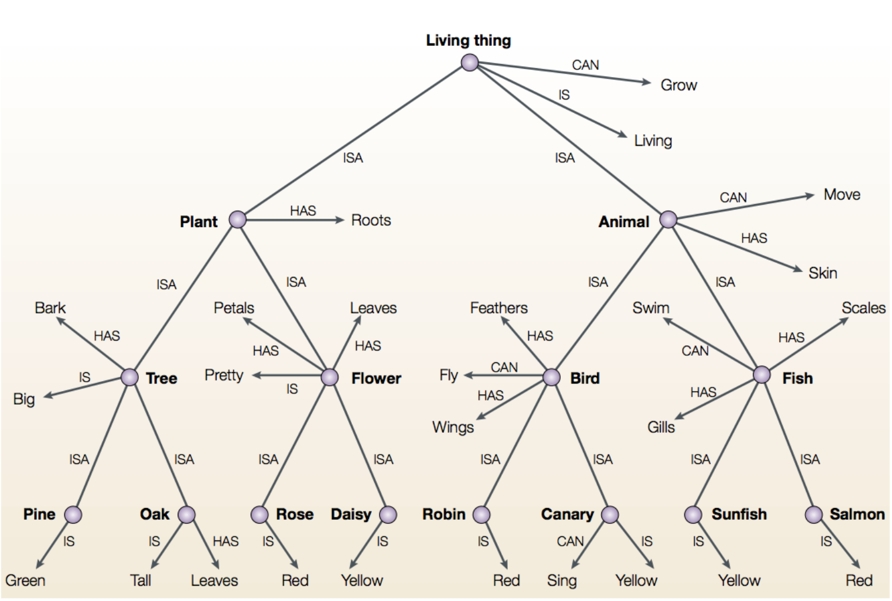Connectionism
- From psychological ideas of the XIXth and XXth centuries.
- The central connectionist principle is that mental phenomena can be described by interconnected networks of simple and often uniform units.
- Parallel Distributed Processing:
- Neural representations are distributed.
- Neural computation is parallel.
- Processing units, connectivity, propagation rule, learning rule.
- Rumelhart’s propositional network
Training Network
- Replace threshold unit by sigmoid unit.
- Collect training examples: $$(..(\text{Item}_{i}, \text{Relation}_{i}, \text{DesiredOutput}_i)..)$$
- Form the mean squared error: $$ E = \sum_k(\text{DesiredOutput}(k) - \text{Output}(k))^2$$
- Initialize with random weights and optimize by gradient descent.
Activations
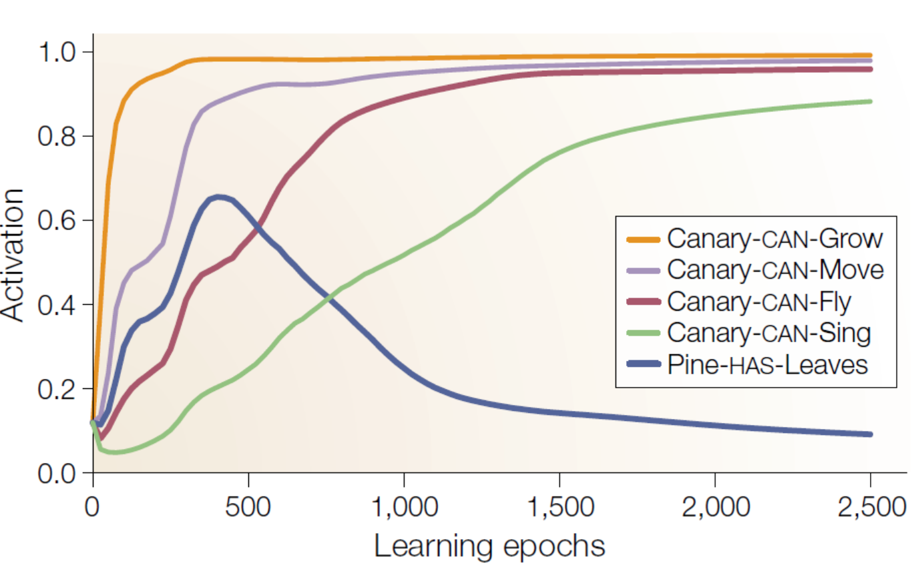Representations

Representations
Idea: Basis Function
- $f(x, w) = \sum_{i=1}^mw_ih_i(x)$
- Basis function may be sample-centered (kernels) or centered in areas of high sample density (using an unsupervised clustering algorithm)
- An interesting type of basis function is $\sigma(U^{T}x) = \frac{1}{1+\exp(-U^{T}x)}$ (single hidden layer neural network)
- Universal approximation theorem (Cybenko 1989): Let $\phi$ be bounded and monotonically-increasing continuous function. The space of function the form $$ f(x) = \sum_{i=1}^Nv_i\phi_i(w_i^Tx + b_i), N \in \mathbb{I}, v_i, b_i \in \mathbb{R}, w_i \in \mathbb{R}^m$$ are dense in the space of continuous function on $[0, 1]^m$
- Theoritician's dilemma: We can approximate any function as close as we want with shallow architecture. Why we need deep ones?
The need of depth
- N-bit parity: requires N-1 XOR gates in a tree of $\log(N)$ where it requires an exponential gates if we restrict ourselves to 2 layers.


The need of depth
- A series of hidden layers extracts increasingly abstract features from the image.
- the first layer can easilyidentify edges, by comparing the brightness of neighboring pixels.
- the second hidden layer can easily search for corners and extended contours, which are recognizable as collections of edges.
- Deep learning has become more useful as the amount of available training data has increased.
- Deep learning models have grown in size over time as computer hardware and software infrastructure for deep learning has improved (nvidia GPU, Google TPU).

Dataset Over Algorithm
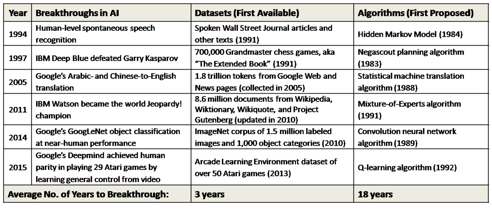 The average elapsed time between key algorithm proposals and corresponding advances was about 18 years, whereas the average elapsed time between key dataset availabilities and corresponding advances was less than 3 years, or about 6 times faster.Imagenet Large Scale Visual Recognition Challenge
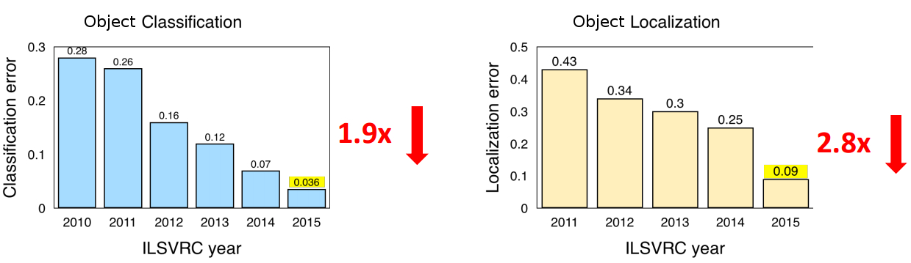 Error rates on the imagenet dataset have fallen dramatically since the introduction of deep learning systems for classification and localization of objects in images. Imagenet 2011 results, Imagenet 2012 results, Imagenet 2013 results, Imagenet 2014 results, Imagenet 2015 results.Imagenet Large Scale Visual Recognition Challenge
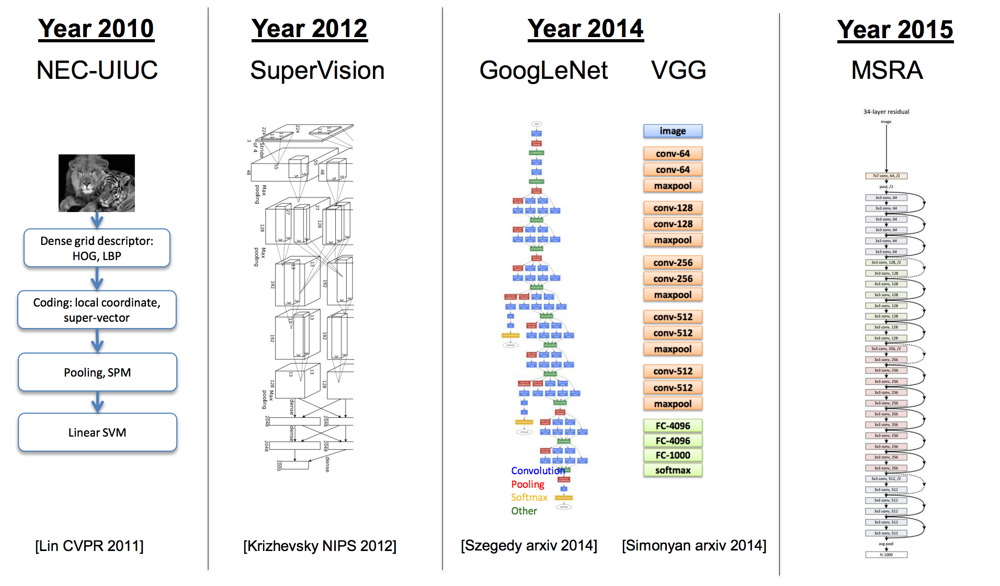Multilayer perceptron
Neural network with L hidden layers
- layer pre-activation for $k>0$ ($h^{(0)}(x)=x$): $$ a^{(k)}(x) = b^{(k)} + W^{(k)}h^{(k-1)}(x)$$
- hidden layer activation ($k \in \{1,..L\}$): $$ h^{(k)}(x) = g(a^{(k)}(x))$$
- output layer activation (k=L+1): $$ h^{(L+1)}(x) = o(a^{(L+1)}(x)) = f(x)$$
Activation function
- sigmoid function: $$g(x) = \frac{1}{1+\exp(-x)}$$
- Tanh function: $$g(x) = \tanh(x) = \frac{\exp(x)-\exp(-x)}{\exp(x)+\exp(-x)}$$
- ReLu (rectified linear unit)function: $$g(x) = max(x, 0)$$
- We use the softmax activation function at the output layer: $$o(a) = \text{softmax}(a) = [\frac{\exp(a_1)}{\sum_c \exp(a_c)},..\frac{\exp(a_C)}{\sum_c \exp(a_c)} ]$$
Gradient descent algorithm
- initialize $\theta, (\theta = \{W^{(1)}, b^{(1)},.. W^{(L+1)}, b^{(L+1)}\} )$
- for K iterations: $$ \delta = - \frac{1}{N}\sum_{t \in \{1,..N\}}\nabla_{\theta}l(f(x^{(t)}; \theta), y^{(t)})$$ $$ \theta_{k+1} = \theta_k + \eta \delta $$
- For classification, the loss function is the negative log-likelihood $f(x)_c = p(y=c|x)$ (sometimes referred to as cross-entropy): $$l(f(x), y) = - \sum_c 1_{(y=c)}\log f(x)_c = - \log f(x)_y $$
Backpropagation algorithm
Gradient computation
Loss gradient at output pre-activation:
- Partial derivative: $$\frac{\partial}{\partial a^{(L+1)}(x)_c}- \log f(x)_y$$ $$= - (1_{(y=c)} - f(x)_c)$$
- Gradient: $$\nabla_{a^{(L+1)}(x)} (-\log f(x)_y)$$ $$= - (e(y) - f(x))$$
Gradient computation
- if a function p(a) can be written as a function of intermediate results $q_i(a)$ then we have: $$ \frac{\partial p(a)}{\partial a} = \sum_i \frac{\partial p(a)}{\partial q_i(a)} \frac{\partial q_i(a)}{\partial a} $$

Gradient computation
Loss gradient at hidden layers: let's apply chain rule- Partial derivative: $$ \frac{\partial}{\partial h^{(k)}(x)_j} -\log f(x)_y = \sum_i \frac{\partial - \log f(x)_y}{\partial a^{(k+1)}(x)_i} \frac{\partial a^{(k+1)}(x)_i}{\partial h^{(k)}(x)_j}$$
- Gradient: $$\nabla_{h^{(k)}(x)} - \log f(x)_y = (W^{(k+1)})^T (\nabla_{a^{(k+1)}(x)} - \log f(x)_y)$$
Gradient computation
Loss gradient at hidden layers pre-activation
- Partial derivative: \begin{align} &\frac{\partial}{\partial a^{(k)}(x)_j} - \log f(x)_y\\ &= \frac{\partial - \log f(x)_y}{\partial h^{(k)}(x)_j} \frac{\partial h^{(k)}(x)_j}{\partial a^{(k)}(x)_j}\\ &= \frac{\partial - \log f(x)_y}{\partial h^{(k)}(x)_j} g'(a^{(k)}(x)_j) \end{align}
- Gradient: $$\nabla_{a^{(k)}} - \log f(x)_y = (\nabla_{h^{(k)}(x)}-\log f(x)_y) . [..g'(a^{(k)}(x)_j..]$$
Gradient computation
Loss gradient at parameters
- Partial derivative: $$\frac{\partial}{\partial W^{(k)}_{i,j}} - \log f(x)_y = \frac{\partial - \log f(x)_y}{\partial a^{(k)}(x)_i} \frac{\partial a^{(k)}(x)_i}{\partial W^{(k)}_{i,j}}$$ $$\frac{\partial}{\partial b^{(k)}_{i}} - \log f(x)_y = \frac{\partial - \log f(x)_y}{\partial a^{(k)}(x)_i} \frac{\partial a^{(k)}(x)_i}{\partial b^{(k)}_i}$$
- Gradient: $$\nabla_{W^{(k)}}-\log f(x)_y = (\nabla_{a^{(k)}}-\log f(x)_y)h_{(k-1)}(x)^T$$ $$\nabla_{b^{(k)}}-\log f(x)_y = \nabla_{a^{(k)}}-\log f(x)_y$$
Backpropagation algorithm
- compute output gradient $$\nabla_{a^{(L+1)}(x)_c} (-\log f(x)_y) = - (e(y) - f(x))$$
- for k from L+1 to 1:
- compute gradient of hidden layer parameter: $$\nabla_{W^{(k)}}-\log f(x)_y = (\nabla_{a^{(k)}}-\log f(x)_y)h_{(k-1)}(x)^T$$ $$\nabla_{b^{(k)}}-\log f(x)_y = \nabla_{a^{(k)}}-\log f(x)_y$$
- compute gradient of hidden layer below: $$\nabla_{h^{(k-1)}(x)} - \log f(x)_y = (W^{(k)})^T \nabla_{a^{(k)}(x)} - \log f(x)_y$$ \begin{align} \nabla_{a^{(k-1)}} - \log f(x)_y &= (\nabla_{h^{(k-1)}(x)}-\log f(x)_y) \\ &. [..g'(a^{(k-1)}(x)_j..] \end{align}
Gradient descent
- More expensive step
- Can choose among a wide range of optimization algorithms
- Opportunities for parallelism
- Very cheap iteration; gradient w.r.t. just 1 data point
- Stochastic process dependent on the choice of i
- Descent in expectation
Theoretical motivation: strongly convex case
- Let's $R_n(\theta) = \frac{1}{n}\sum_{t \in \{1,...,n\}}l(f(x^{(t)}; \theta), y^{(t)})$ and $\theta^*=\text{argmin}(R_n)$
- Batch gradient: linear convergence $$R_n(\theta_k)-R_n(\theta^*) \leq O(\rho^k)$$ Per iteration cost proportional to n
- Stochastic gradient: sublinear convergence $$\mathbb{E}[R_n(\theta_k)-R_n(\theta^*)] = O(\frac{1}{k})$$ Per iteration cost and convergence constant independant of n
| Batch | Stochastic | |
|---|---|---|
| convergence rate | $\rho^k$ | $\frac{1}{k}$ |
| $\epsilon$ optimality | $n\log(\frac{1}{\epsilon})$ | $\frac{1}{\epsilon}$ |
Fast initial progress of SG followed by drastic slowdown
Beyond stochastic GD
Mini-batch gradient descent: is widely used in practice: $$\theta_{k+1} = \theta_k - \eta \frac{1}{|S_k|}\sum_{t \in S_k}\nabla_{\theta}l(f(x^{(t)}; \theta), y^{(t)})$$ $$ S_k \subset \{1,...,n\} \text{is chosen randomly in each iteration}$$- allows some degree of parallelization
- reduces variance of the stochastic gradients estimates
Schematic of two-dimensional spectrum of optimization methods
Second-order methods
Batch gradient step $\eta \nabla_{\theta}F(\theta_k)$ ignores curvature of the function:
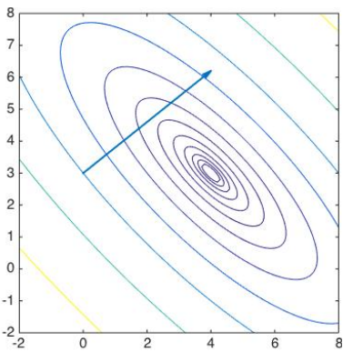Newton scaling $B = (\nabla_{\theta}^2F(\theta_k))^{−1/2}$: gradient step moves to the minimizer:

..corresponds to minimizing a quadratic model of F in the original space $\theta_{k+1} = \theta_k - \eta s_k, \text{ where } \nabla_{\theta}^2F(\theta_k)s_k = -\nabla_{\theta}F(\theta_k)$
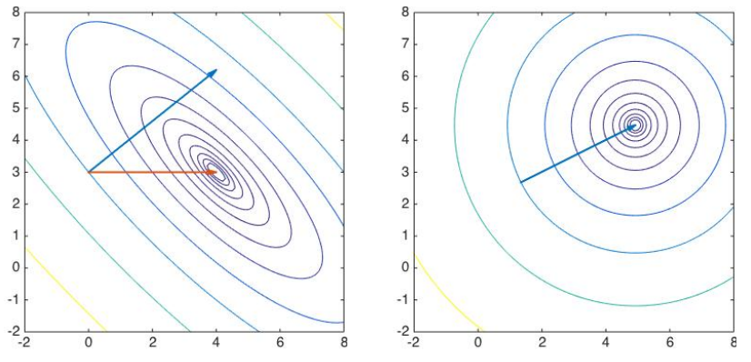Gradient descent methods
- We recall the gradient descent update: $$x_{t+1} = x_t + \delta_t, \text{where } \delta_t = -\eta g_t$$
- Adagrad: large gradients have smaller learning rates and small gradients have large learning rates: $$ \delta_t = \frac{\eta}{\sqrt{\sum_{\tau=1}^t g_{\tau}^2}}g_t$$
- Momentum: accelerates progress along dimensions in which gradient consistently point in the same direction and to slow progress along dimensions where the sign of the gradient continues to change. $$ \delta_t = \rho \delta_{t-1} - \eta g_t$$
Gradient descent methods
- Nesterov Method: First make a big jump in the direction of the previous accumulated gradient. Then measure the gradient where you end up and make a correction. 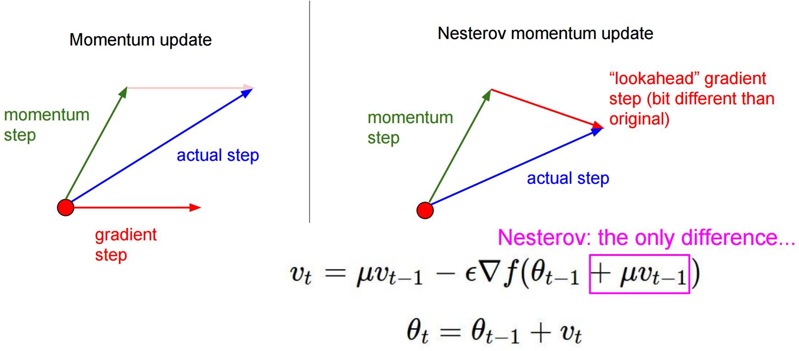
- Other approches: Adam, AdaDelta and RMSProp
What have we seen last time?
- Multilayer perceptron: basic neural architecture
- Learning algorithm: gradient descent
- Backpropagation: efficient way to compute gradient
- Gradient based optimization: Theoretical and practical motivation
What will we see today?
- Non convex optimization
- Regularization
- Convolutional neural network: this is the main part
- What does a neural network like in tensorflow?
Non convex Optimzation
The mirage of convexity
- Local minima dominate in low-D, but saddle points dominate in high-D
- Most local minima are close to the bottom (global minimum error)
Are saddle points or local minima more common?
- Imagine for each eigenvalue, you flip a coin
- If heads, the eigenvalue is positive, if tails, negative
- Need to get all heads to have a minimum
- Higher dimensions -> exponentially less likely to get all heads
- Random matrix theory: The coin is weighted; the lower R is, the more likely to be heads
- So most local minima have low R!
- Most critical points with high J are saddle points!
Saddle points during traning
-
Oscillaing between two behaviors:
- Slowly approaching a saddle point.
- Escaping it
Regularization
Regularization: Dropout
A Simple Way to Prevent Neural Networks from Overfitting 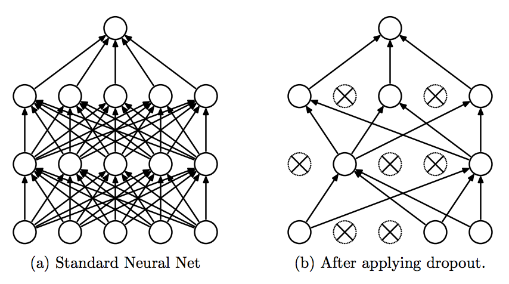 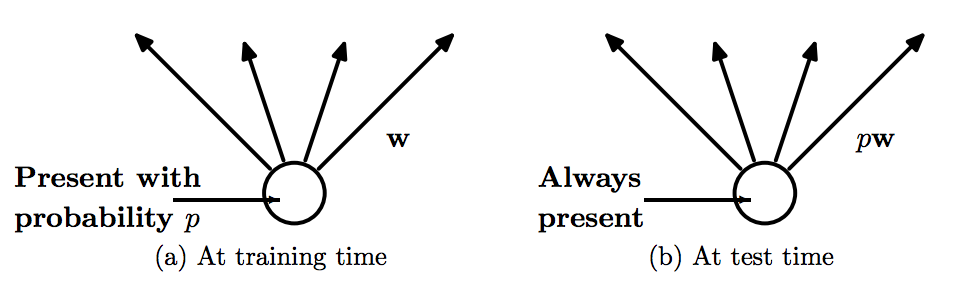Regularization: Dropout
- Dropout is form of model averaging: let's consider a single hidden layer network with H hidden units. Dropout is equivalent to sampling from $2^H$ models. Each models only gets one traning example.
- At evaluation time, instead of sampling many different models and take geometric mean of their output distribution, we use one model with all the hidden units activated but we halve their outgoing weights.
Computer vision
- View point variation
- Scale variation
- Illumination conditions
- Deformation
- ...
Speed of processing in the human visual system
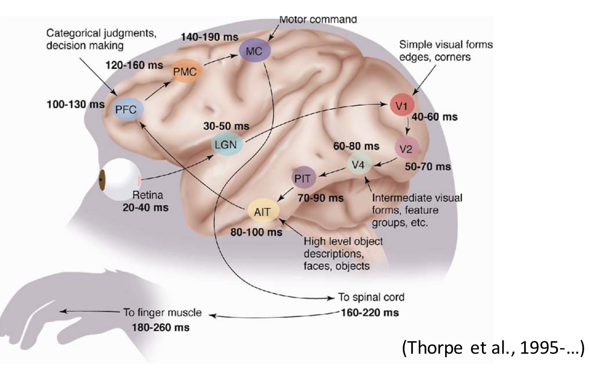Hubel & Wiesel (1962)
-
Biological insights:
- Simple cells detect local features
- Complex cells pool local features in a retinotopic neighborhood
The Neocognitron

LeNet5 (1998)

- Convolutional neural network use sequence of 3 layers: convolution, pooling, non-linearity.
- Use convolution to extract spatial features.
- Subsample using spatial average of maps.
- Non-linearity in the form of tanh or sigmoids.
- Multi-layer neural network (MLP) as final classifier.
- Sparse connection matrix between layers to avoid large computational cost.
Local connexions
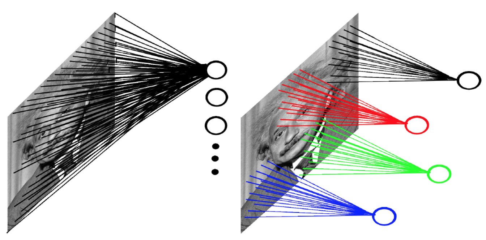Convolution
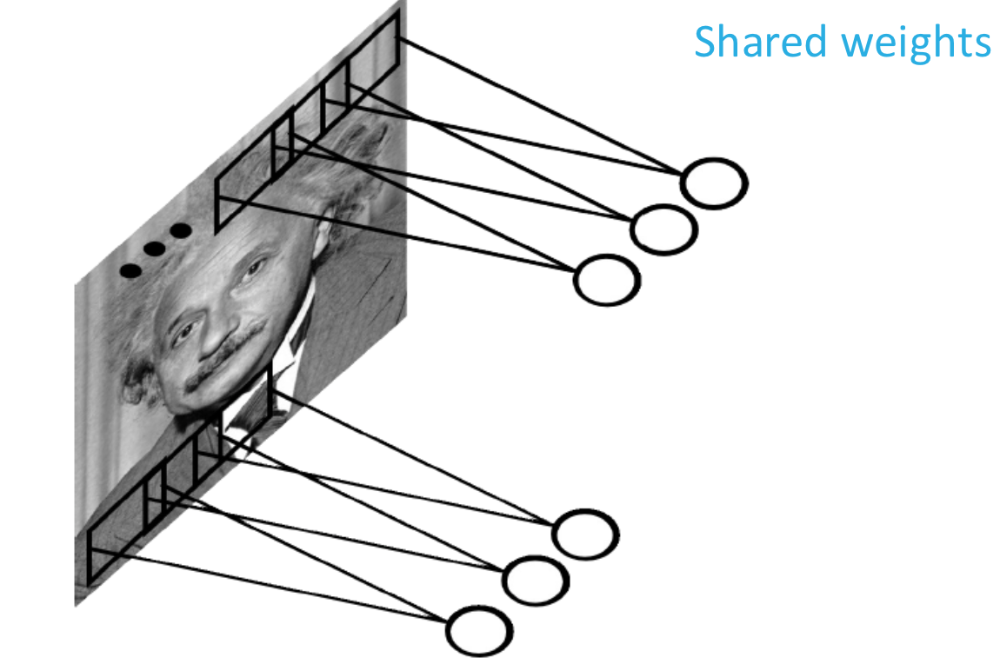Convolve the filter with images: slide over the images spatially and compute the dot products
Multiple convolution
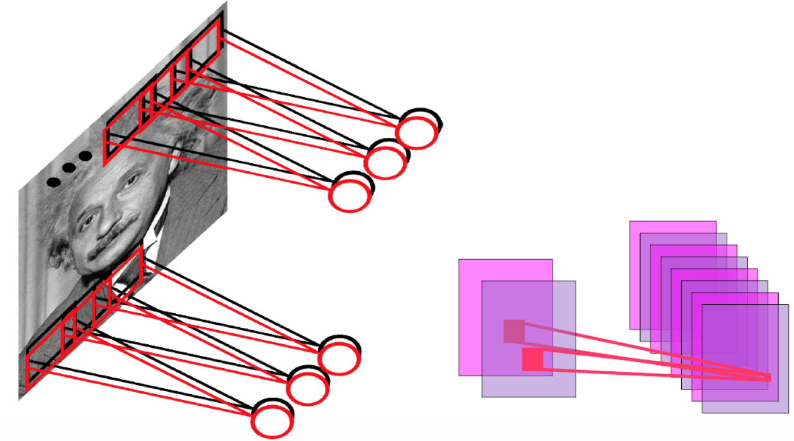Convolution
Convolution
Pooling layer
- introduces local translation invariance
- reduces dimentionnality
Convolutional neural network (Convnet) layers
- Input layer: holds the raw pixel values of the image. 3 dimensions: width, height, and depth (color channels).
- Convolutional layer: computes the output of neurons that are connected to local regions in the input, each computing a dot product between their weights and the region they are connected to in the input volume.
- ReLu layer: applies an elementwise activation function.
- Pooling layer: performs a downsampling operation along the spatial dimensions (width, height).
- Fully connected layer: computes the class scores

Traditional approaches
Manually designed features are often over-specified, incomplete and take a long time to design and validate. Example of descriptor: Scale-Invariant Feature Transform and vector quantization
Example of descriptor: Scale-Invariant Feature Transform and vector quantization

End to end training


ImageNet challenge
14 million images gathered from internet and labeled via Amazon Turk, 20k classes.ImageNet challenge
- Winner: SuperVision team: Alex Krizhevsky,Ilya Sutskever,Geoffrey Hinton, University of Toronto.
- Next best model is not convnet
AlexNet architecture
- 7 layers, 650 000 neurons, 60 000 000 parameters
- Trained on 2 GPUs in two weeks
- Dropout with 0.5 probability
- In order to avoid overfitting, they trained on 224x224 patches extracted randomly from 256x256 images, and also their horizontal reflections
Convnet visualizing
- Use deconvolution to map activations at higher layers back to in the input
- same operations as Convnet but in reverse:
- Unpool features maps
- Rectify unpooled maps with the same non-linearity
- Convolve rectified unpooled maps with transposed learned filters
Convnet visualizing
- For a given feature map, we show the top 9 activations. Projecting each separately down to pixel space reveals the different structures that excite a given feature map.
- Alongside these visualizations we show the corresponding image patches.
Convnet visualizing
What does a neural network like in tensorflow?
 TensorFlow is Google open-sourced machine learning library
TensorFlow is Google open-sourced machine learning library
 Hello word: handwritten digits classification
Hello word: handwritten digits classification
Simple model: Softmax classification
$$ P(y=k) = \frac{\exp(\sum_{i=1}^{784}w_{k,i}x_i + b_k)}{\sum_{k=0}^9\exp(\sum_{i=1}^{784}w_{k,i}x_i + b_k)} = \text{softmax}(\sum_{i=1}^{784}w_{k,i}x_i + b_k)$$matrix mutiplication: a batch of 100 images at a time
X : Images [100, 784], W: Weights [784, 10], b : Biases [10], Y : predictions [100, 10]
Y = tf.nn.softmax(tf.matmul(X, W) + b)
Loss function
cross_entropy = -tf.reduce_sum(Y_*tf.log(Y))
Tensorflow: Initialisation
import tensorflow as tf
X = tf.placeolder(tf.float32, [None, 28, 28, 1])
# None will become the batch size, 100
W = tf.Variable(tf.zeros([784, 10]))
b = tf.Variable(tf.zeros([10]))
init = tf.initialize_all_variables()
tensorflow: loss function and accuracy
# model
Y = tf.nn.softmax(tf.matmul(tf.reshape(X, [-1, 784]), W) + b)
# placefolder for correct labels
Y_ = tf.placeholder(tf.float32, [None, 10])
# loss function
cross_entropy = -tf.reduce_sum(Y_*tf.log(Y))
# % of correct label in batch
is_correct = tf.equal(tf.argmax(Y, 1), tf.argmax(Y_, 1))
accuracy = tf.reduce_mean(tf.cast(is_correct, tf.float32))
tensorflow: training
optimizer = tf.train.GradientDescentOptimizer(0.001)
train_step = optimizer.minimize(cross_entropy)
TensorFlow: RUN
sess = tf.Session()
sess.run(init)
for i in range(1000):
# load batch images and labels
batch_X, batch_Y = mnist.train.next_batch(100)
train_data={X: batch_X, Y_: batch_Y}
# train
sess.run(train_step, feed_dict=train_data)
#success
a, c = sess.run([accuracy, cross_entropy], feed_dict=train_data)
# sucess on test data
test_data={X: mnist.test.images, Y_: mnist.test.labels}
a, c = sess.run([accuracy, cross_entropy], feed_dict=test_data)
TensorFlow: All code
Go deeper
Tensorflow: Initialisation
K = 200
L = 100
M = 60
N = 30
W1 = tf.Variable(tf.truncated_normal([28*28, K]))
b1 = tf.Variable(tf.zeros([K]))
W2 = tf.Variable(tf.truncated_normal([K, L]))
b2 = tf.Variable(tf.zeros([L]))
W3 = tf.Variable(tf.truncated_normal([L, M]))
b3 = tf.Variable(tf.zeros([M]))
W4 = tf.Variable(tf.truncated_normal([M, N]))
b4 = tf.Variable(tf.zeros([N]))
W1 = tf.Variable(tf.truncated_normal([N, 10]))
b1 = tf.Variable(tf.zeros([10]))
TensorFlow: the model
X = tf.reshape(X, [-1, 28*28])
Y1 = tf.nn.sigmoid(tf.matmul(X, W1) + b1)
Y2 = tf.nn.sigmoid(tf.matmul(Y1, W2) + b2)
Y3 = tf.nn.sigmoid(tf.matmul(Y2, W3) + b3)
Y4 = tf.nn.sigmoid(tf.matmul(Y3, W4) + b4)
Y = tf.nn.softmax(tf.matmul(Y4, W5) + b5)
Deep learning in natural language processing

Deep learning in natural language processing
- Goal: for computers to process or "understand" natural language in order to perform tasks that are useful.
- Applications range from simple to complex:
- Spell checking, keyword search, finding synonyms
- Extracting information from websites such as product price, dates,..
- Classifying, reading level of school texts, positive/negative sentiment.
- Machine translation
- Question Answering
What we will see today
- Word embedding: word2vec
- Language model: Recurrent neural network and LSTM
- Basic NLP tasks: part of speech and named entity
- Sequence to sequence Framework: machine transation
- Attention mechanism: machine translation and image captioning
Word Embedding
Vector Representations of Words
- Image and audio processing system work with high-dimensional datasets encoded as vectors of the individual pixel-intensities or power spectral density coefficients
- Natural language processing systems traditionally treat words as discrete atomic symbols
Representing Words - Classical View: One Hot Encoding
- Obama: 10000
- Dolphin: 01000
- Paris: 00100
- Berlin: 00010
- SeaWorld: 00001
⇒ Every word is orthogonal to one another $$(w_{Paris}. w_{Berlin} = 0)$$
Word embedding
- The Distributional Hypothesis in linguistics: words that are used and occur in the same contexts tend to purport similar meanings
- Word embedding represent words in a contiuous vector space where semantically similar words are mapped to nearby points.

Word embedding
Count based methods
- We compute the statistics of how some words co-occurs with its neighbor words in a large text corpus.
- Then we map these count-statistics down to a small, dense vector for each word.
Word embedding
Predictive Method: Word2vec (Mikolov, 2013)
- Continuous Bag Of Word (CBOW) architecture predicts the current word based on the context.
- Skip-gram predicts surrounding words given the current word.
- Skip-gram treats each context-target pair as a new observation while CBOW smoothes over a lot of the distributional information
Skip-gram
- Let's $W$ be embedding matrix and $W'$ the output weight matrix
- Let w a word is hot-one encoded by x such as $x_k=1, x_k=0 \text{ for } k' \neq k$, then, the hidden layer $$h = x^TW = W_{(k,.)} = v_w$$
- If $v'_{w_j}$ is the j-th column of the matrix $W'$, the output pre-activation is: $$ u_j= (v'_{w_j})^T h$$

Skip-gram
- The probability of a context word $w_t$ (target) given the context's center $w_c$ is: \begin{align} P(w_t| w_c) &= \text{softmax}(u_t) \\ &= \frac{\exp((v'_{w_t})^Tv_{w_c})}{\sum_{\text{word w in Vocab}} \exp((v'_{w})^Tv_{w_c})} \end{align}
- The negative log-likelihood to minimize (very expensive to compute): \begin{align} -\log P(w_t| w_c) &= - (v'_{w_t})^Tv_w \\ &+ \log\big(\sum_{\text{word w in Vocab}} \exp((v'_{w})^Tv_{w_c})\big) \end{align}
- Negative sampling: word2vec is instead trained using a binary classification objective: \begin{align} loss_{neg} &= -\log P(D=1| v'_{w_t} v_{w_c}) \\ &- k\mathbb{E}_{w \sim P_{noise}}\log P(D=0|v'_{w}, v_{w_c}) \end{align}
Linguistic regularities in the word space
| Expression | Nearest token |
|---|---|
| Paris - France + Italy | Rome |
| bigger - big + cold | colder |
| sushi - Japan + Germany | bratwurst |
| Windows - Microsoft + Google | Android |
| apple - apples + cars | car |
Baroni et al., “Don’t count, predict! A systematic comparision of context-counting vs. context-predicting semantic vectors”, ACL 2014
“We set out to conduct this study [on context-counting vs.context-predicting] because we were annoyed by the triumphalist overtones often surrounding predict models, despite the almost complete lack of a proper comparison to count vectors. Our secret wish was to discover that it is all hype, and count vectors are far superior to their predictive counterparts. [...] Instead we found that the predict models are so good that, while the triumphalist overtones still sound excessive, there are very good reasons to switch to the new architecture.”
Language Model: Recurrent neural network
Language Model
- A language model computes a probability for a sequence of words: $p(w_1,...,w_T)$
- Useful for machine translation
- Word ordering: p(the cat is small) > p(small the cat is)
- Word choice: p(walking home after school) > p(walking house after school)
Traditional language model
- Probability is usually conditioned on window of n previous words: Markov assumption: \begin{align} &p(w_1,...,w_T) = p(w_1)\prod_{i=1}^m p(w_i|w_1,...,w_{i-1}) \\ & \simeq p(w_1)\prod_{i=1}^m p(w_i|w_{i-(n-1)},...,w_{i-1}) \end{align}
- Estimate probability by counting: $p(w_2|w_1) = \frac{\text{count}(w_1, w_2)}{\text{count}(w_1)}$ $$p(w_3| w_2, w_1) = \frac{\text{count}(w_1, w_2. w_3)}{\text{count}(w_1, w_2)}$$
N-gram: lack of Generalization
- Consider three trigrams: "chases a cat", "chases a dog" and "chases a rabbit" were observed in training corpus
- There is a clear pattern here: "chases a" will followed by an animal.
- Based on this concept, we generalize this knowledge to unseen trigrams.
- N-gram language model does not capture this concept
- If the trigram "chases a lama" didn't occurr more than once in the training corpus, the conditional probability given by n-gram language model will be zero.
Recurrent neural network
[Credit of slide to Fei-Fei Li & Andrej Karpathy & Justin Johnson]Recurrent neural network
- Given list of word vectors: $x_1, x_2,...,x_T$
- $h_t = \text{sigmoid}(W^{(hh)} h_{t-1} + W^{(hx)}xt)$
- $y_t = \text{softmax}(W^{(yh)} h_t) $
the difficulty of training Recurrent Neural Networks: for hacker :)
[Credit of the slide to Fei-Fei Li & Andrej Karpathy & Justin Johnson]the difficulty of training Recurrent Neural Networks: for hacker :)
[Credit of the slide to Fei-Fei Li & Andrej Karpathy & Justin Johnson]the difficulty of training Recurrent Neural Networks: with maths
- Let's take a simpler RNN $$h_t = Wf(h_{t-1}) + W^{(hx)}x_t$$ $$y_t = W^{(yh)}f(h_t)$$
- Total error is the sum of each error at time steps t: $$\frac{\partial E}{\partial W} = \sum_{t=1}^T\frac{\partial E_t}{\partial W}$$
- Let's apply Chain rule: $\frac{\partial E_t}{\partial W} = \sum_{k=1}^t \frac{\partial E_t}{\partial y_t} \frac{\partial y_t}{\partial h_t} \frac{\partial h_t}{\partial h_k} \frac{\partial h_k}{\partial W}$
the difficulty of training Recurrent Neural Networks: with maths
- $\frac{\partial h_t}{\partial h_k} = \prod_{i=k+1}^{t} \frac{\partial h_i}{\partial h_{i-1}}$
- $\text{As } h_i = Wf(h_{i-1}) + W^{(hx)}x_i$, $$\frac{\partial h_i}{\partial h_{i-1}} = W^T\text{diag}(f'(h_{i-1}))$$
- As $f'$ is bounded, $||\frac{\partial h_i}{\partial h_{i-1}}|| \leq \|W\| \| \text{diag}(f'(h_{i-1})\| \leq \beta$
- $\|\frac{\partial h_t}{\partial h_k}\| \leq \prod_{i=k+1}^{t} ||\frac{\partial h_i}{\partial h_{i-1}}|| \leq \beta^{(t-k)}$
- This can become very high or very small => Vanishing or exploding gradient
Trick for exploding gradient: clipping trick
Long Short Term Memory network


Long Short Term Memory network
- LSTM defines an extra cell mempry $c_t$.
- The cell memory $c_t$ is combined linearly at each timestamp $$c_t = f_{t}*c_{t-1} + i_t * \tilde{c}_t$$
- The information which is propagated from $c_{t-1}$ to $c_t$ is controlled by input and forget gates $i_t$ and $f_t$.
- $\tilde{c}_t$ is the memory cell candidate. $\tilde{c}_t = \text{tanh}(W_c[h_{t-1}, x_t] + b_c)$
- The information propagated to the hidden layer is controlled by the output gate: $$ h_t = o_t * \text{tanh}(c_t)$$
- The input gate determines the what to include from the input $x_t$.
- The forget gate determines the what to forget from $c_{t−1}$.
- the output gate determines what is relevant to the current state $h_t$

Memory cell

forget gate

input gate

output gate

RNN vs LSTM
RNN
$$h_t = \text{tanh}(W \left( \begin{array}{c}x_t \\ h_{t-1} \end{array} \right)) $$ $$ h \in \textbf{R}^n, \text{ } W [n \text{ x } 2n] $$LSTM
$$ \left( \begin{array}{c} i_t \\ f_t \\ o_t \\ \tilde{c}_t \end{array} \right) = \left( \begin{array}{c} \text{sigmoid} \\ \text{sigmoid} \\ \text{sigmoid} \\ \text{tanh} \end{array} \right) W \left( \begin{array}{c}x_t \\ h_{t-1} \end{array} \right)$$ $$ c_t = f_{t}*c_{t-1} + i_t * \tilde{c}_t $$ $$ h_t = o_t * \text{tanh}(c_t) $$ $$ h \in \textbf{R}^n, \text{ } W [4n \text{ x }2n] $$Language model benchmark: Google News Benchmark (1B tokens)
| model | perplexity |
|---|---|
| 5-gram + KN regularized | 74.4 |
| RNN [Chelba et al, 2014] | 51.3 |
| LSTM [Brain team, submitted to ICML 2016] | 30 |
Basic Information Extraction tasks
- Part of speech tagging (POS)
- Named entity recognition (NER)
Information Extraction
Part Of Speech tags
| tag | description |
|---|---|
| DT | Determiner |
| JJ | Adjective |
| VB | Verb, base form |
| PRP | Personal pronoun |
| ... |
Named Entity recognition
- Organisation
- Date
- Location
- Person
Classical approach
[Standford NLP, Chris Manning]Beam Search for inference
- Intuition: follow single path at a time but switch paths whenever some competing path look better
- Beam Search: keep only k most promising path (k highest or lowest scores).
- Beam Search example k = 3 (better = lower score): S={A} → S={B, C, D} → S={B, C, E} → S={C, E, H}
Classical approach
- At each time, a classifier make a single decision conditioned on evidence from observations and previous decisions
- extract from the sentence a rich set of hand-designed features which are then fed to a standard classification algorithm, e.g. a Support Vector Machine (SVM), often with a linear kernel
- The choice of features is a completely empirical process, mainly based first on linguistic intuition, and then trial and error, and the feature selection is task dependent
| -3 | -2 | -1 | 0 | +1 |
| ORG | ORG | O | ??? | ??? |
| Xerox | Corp. | fell | 26 | % |
| $W_0$ | 26 |
| $W_{+1}$ | % |
| $W_{-1}$ | fell |
| $C_{-1}$ | O |
| $C_{-2}-C_{-1}$ | ORG-O |
| hasdigit? | true |
| hasdigit? | true |
| ... | ... |
Natural Language Processing (almost) from Scratch
- Use a neural network to learn features
- Embedding layer: embedding vectors are stored in $LT_W$ which is a lookup table. We embed words with the same way as in word2vec. We could extend embedding to discrete features such as word suffix.
- For given input x, the network output a score $f_i(x)$ for each tag $i$.
- Word-Level Log-Likelihood: the conditional tag propability is: $$ p(i| x) = \text{softmax}(f_i)$$
Natural Language Processing (almost) from Scratch
Sentence-Level Log-Likelihood:- We know that there are dependencies between word tags in a sentence
- Tags organized in chunks and some tags cannot follow other tags
- We introduce a transition score $(A_{i,j})_{(i,j)}$ for jumping from i to j tags in successive words. The transition scores are going to be trained.
- The score of a sentence $[x]_1^T$ along a path of tags $[i]_1^T$ is then given by the sum of transition scores and network scores: $$ s([x]_1^T, [i]_1^T) = \sum_{t=1}^T (A_{i_{t-1}, i_t} + f_{i_t})$$
- Then we normalize this score over all possible tag paths using softmax
| Task | Benchmark | SENNA |
|---|---|---|
| Part of Speech (Accuracy) | 97.24 | 97.29 |
| Named Entity Recognition (F1) | 89.31 | 89.59 |
Sequence to Sequence Framework: machine translation and image captioning as applications
Statistical Machine translation: classical approach
- Translation from source to target ($s\rightarrow t$)
- Source sentence: $s = s_1^m = s_1..s_j..s_m$
- Target sentence: $t = t_1^I = t_1..t_i..t_I$
- Search for the best translation: $$ t^* = \text{argmax}_t p(t|s)$$
- Bayes rule: $$ t^* = \text{argmax}_t \frac{p(s|t) p(t)}{p(s)} = \text{argmax}_t p(s|t) p(t)$$
- p(s|t): translation model trained on parallel data (bitexts)
- p(t): language model trained on monolingual text: controls whether the target sentence is well-formed or not
Statistical Machine translation: classical approach
- Perform word alignment in both directions
- Extract phrase (heuristic)
- Score phrases (relative frequency)
- Train language and reordering model
- Optimize weights of each model and combine all models
Sequence to sequence: Encoder/decoder approach
- An encoder processes the source sentence and creates an compact representation
- This representation is the input to the decoder which generates a sequence in the target sentence
-
Some details:
- Encoder/decoder: huge LSTM: 4 layers, 384M parameters and 8,000 dimensional state each.
- Encoder: no output layer, no loss function.
- SMT basline: 33.30 BLEU.
- Beam search for inference: 12 size.
- Neural Machine Tranlation system (NMT): 30.59 BLEU and 34.91 ensemble of 5.
- $\text{BLEU} = \text{BP} \exp{\sum_{i=1}^N \frac{\log(p_n)}{N}}$ where $p_n$ is the n-gram precision and BP is brevity penalty
A figure of a 2-dimensional PCA projection of the LSTM hidden states that are obtained after processing the phrases
The Trouble with Simple Encoder-Decoder Architectures
- The encoder compresses the input sequence as a fixed-size vector from which the decoder needs to generate a full translation.
- Encoder-Decoder does not perform well with long sentences.
A solution: Attention mechanism
- Let's imagine that you are translating the source sentence $(x_1,x_2...,x_n)$
- You have already written the first $i-1$ target words $(y_1,y_2,..y_{i-1})$
- In addition to the already generated target words, A translator looks at each source word $x_j$ and decide whether the source word $x_j$ is relevant for the next target word.
- This is called attention mechanism.
- The attention mechanism is implemented as a neural network with a single hidden layer and a single scalar output $e_j$. This is applied to every source word $x_j$
- The attention mechanism takes as an input the previous target hidden state $z_i$ and the current source hidden state $h_i$
- The relevance score of every source word is $\alpha_j = \frac{\exp(e_j)}{\sum_{j'}\exp(e_{j'})}$
- The sentence representation vector is: $c_i = \sum_{j}\alpha_jh_j$. which summarizes the information about the whole sentence with different emphasis on different words.
Attention mechanism results
 Edge thicknesses represent the attention weights found by the attention model.
Edge thicknesses represent the attention weights found by the attention model.
Image captioning
Image caption with attention mecahnism

Image caption with attention mechanism
Recurrent neural network: different architectures
- One to one: Vanilla Neural Networks
- One to many: e.g. Image Captioning
- many to one: e.g. Sentiment Classification
- many to many: e.g. Machine Translation
- many to many: e.g. Video classification on frame level
CONCLUSION
- Deep learning provides a flexible «almost» universal learnable framework for representing world, visual and linguistic information.
- It is very hard to train and a lot of hyperparameters to tuned.
- It is as much about theory as about engineering.